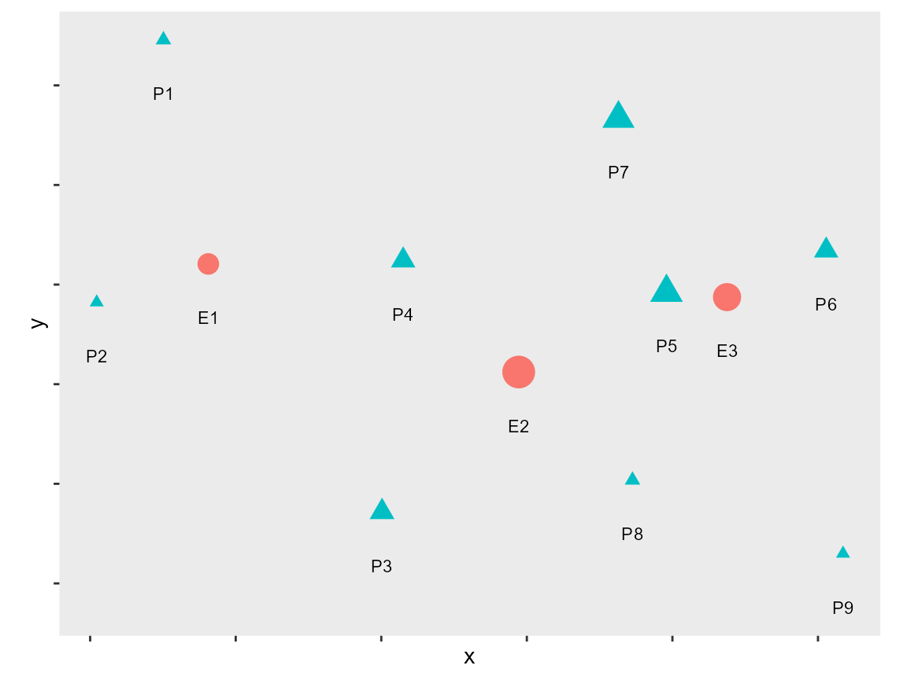
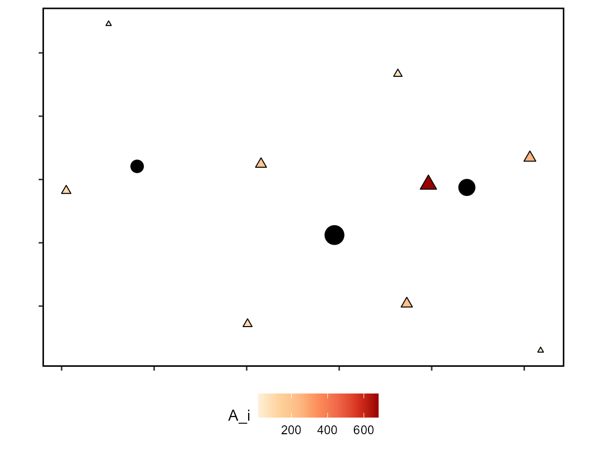
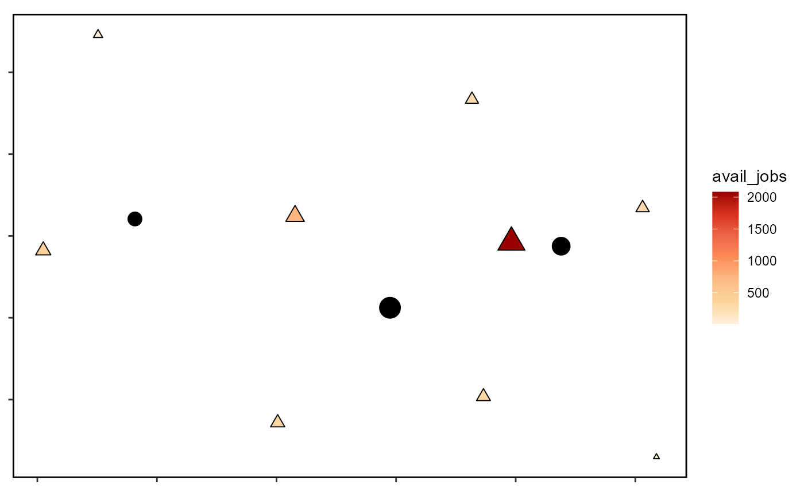
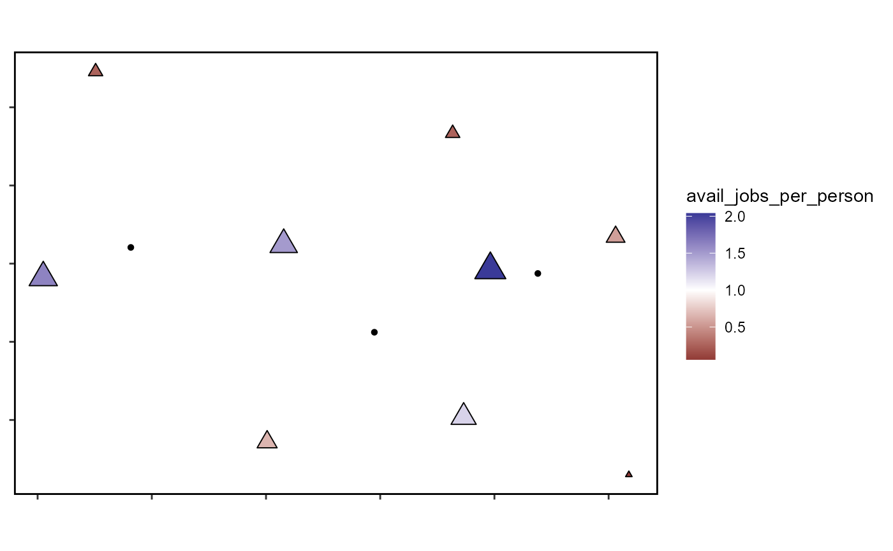
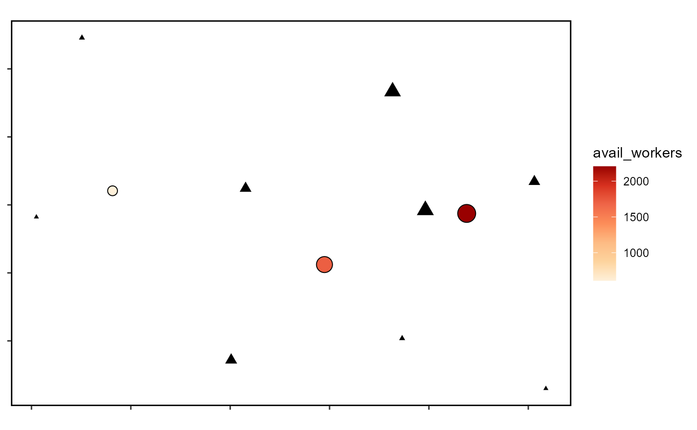
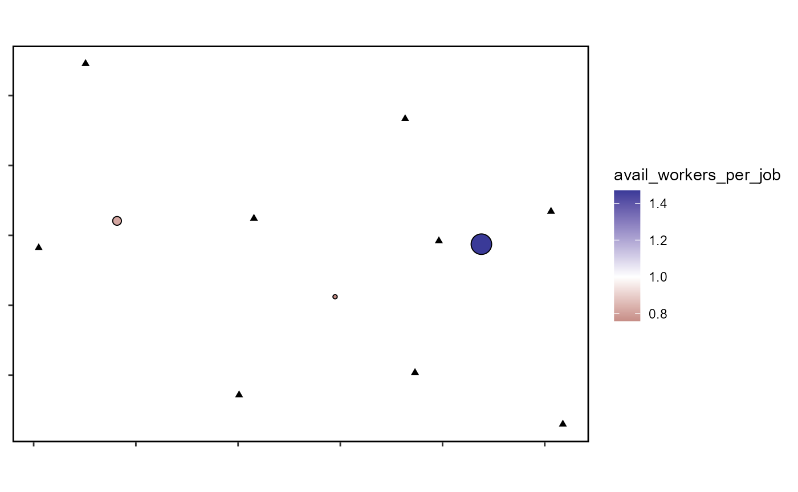
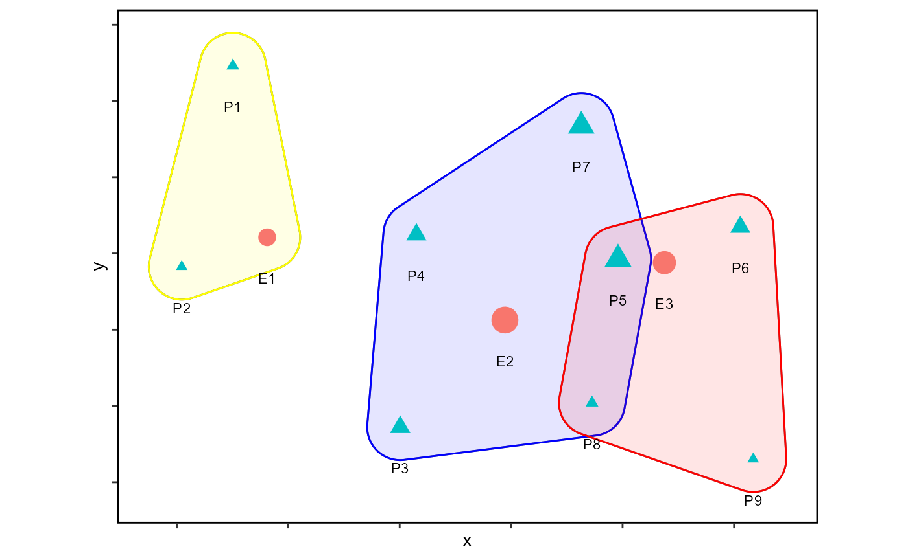
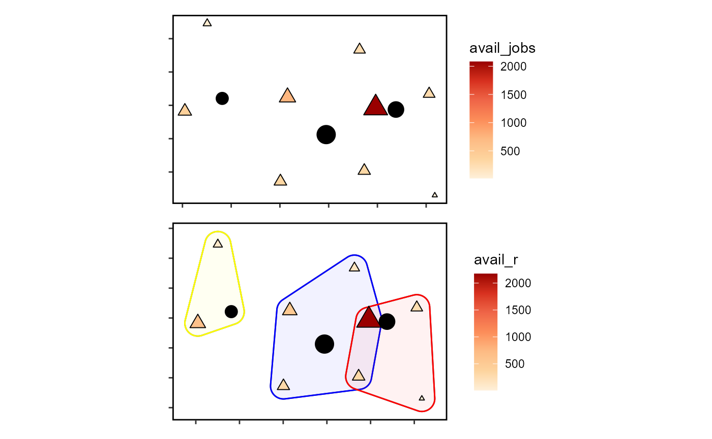
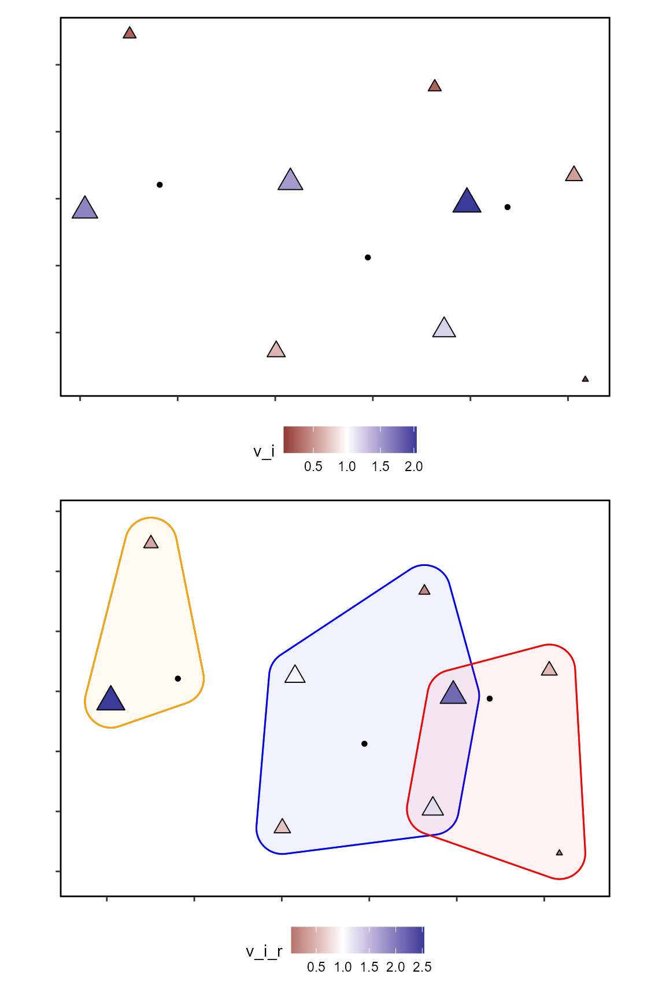
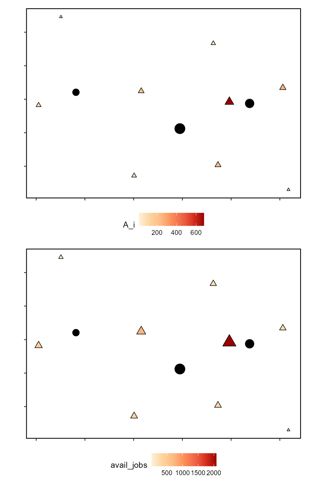

Introducing-Spatial-Availability.RmdAccessibility analysis is widely employed in transportation, geography, public health, and many other areas. It is a relatively simple concept whose appeal derives from combining the spatial distribution of opportunities and the cost of reaching them. Recent works have aimed at making accessibility easier to interpret. This vignette introduces the concept of spatial availability, a form of singly-constrained accessibility that preserves the number of opportunities available, and therefore leads to more interpretable results.
Most accessibility measures (excluding utility-based measures) are derived from the gravity model, and are known as gravity-based accessibility. Briefly, consider the following conventional accessibility measure \(A_i\) : \[ A_i = \sum_{j=1}^JW_jf(c_{ij}) \]
where:
The accessibility value \(A_i\), it can be seen, is the weighted sum of opportunities that can be reached from location \(i\), given the cost of travel \(c_{ij}\) and an impedance function. Summing the opportunities in the neighborhood of \(i\) (the neighborhood is defined by the impedance function) estimates of the total number of opportunities that can be reached from \(i\) at a certain cost. Depending on the impedance function, the measure could be cumulative opportunities (if \(f(\cdot)\) is a binary or indicator function) or a more traditional gravity measure, for instance with a Gaussian impedance function or an inverse cost impedance function.
We use a toy example to introduce the concept of spatial availability, and we will use a conventional accessibility measure for comparison. In this way, we aim to show their differences and discuss how spatial availability improves interpretability in the analysis of spatially dispersed opportunities.
In this section we present a simple numerical example.
Begin by loading the packages needed for the example:
library(AccessPack)
library(dplyr)
library(ggplot2)
library(kableExtra)
library(patchwork)
library(sf)The setup for the example is a simple system with three employment centers and nine population centers.
ggplot(data = toy_sim_zones) +
geom_sf(aes(color = type,
shape = type,
size = number)) +
geom_sf_text(aes(label = id_short),
size = 3,
nudge_y = -600) +
scale_size(range = c(2, 7)) +
theme(legend.position = "bottom",axis.text = element_blank(),
panel.grid = element_blank(),
panel.background = element_rect(size = 1,
color = "black",
fill = NA))
This is the distribution of jobs and population:
toy_sim_zones %>%
st_drop_geometry() %>%
kable(format = "html")| id | id_short | number | type |
|---|---|---|---|
| Employment Center 1 | E1 | 750 | jobs |
| Employment Center 2 | E2 | 2250 | jobs |
| Employment Center 3 | E3 | 1500 | jobs |
| Population 1 | P1 | 260 | population |
| Population 2 | P2 | 255 | population |
| Population 3 | P3 | 510 | population |
| Population 4 | P4 | 495 | population |
| Population 5 | P5 | 1020 | population |
| Population 6 | P6 | 490 | population |
| Population 7 | P7 | 980 | population |
| Population 8 | P8 | 260 | population |
| Population 9 | P9 | 255 | population |
The accessibility to employment of each of the population centers can be calculated using the expression above for \(A_i\). As noted, this yields the number of jobs (opportunities) that are accessible (i.e., can be reached) from each population center, given the cost.
In this example we use the straight line distance between the population and jobs for \(c_{ij}\), and a negative exponential function with \(\beta = 0.0015\). The impedance function is calculated as follows:
Calculate the accessibility:
# using the origin-destination table (OD) of all origin to destination trips; filter in only jobs which are mean distance or less away from a population center and sum number of jobs available in each origin (population center)
c_accessibility <- toy_od_table %>%
mutate(A_ij = f * Jobs) %>%
group_by(Origin) %>%
summarise(A_i = sum(A_ij))Join the results to the geography of the system:
#pass conventional accessibility calculation into the spatial object (toy_sim_zones)
toy_sim_zones_access <- toy_sim_zones %>%
left_join(c_accessibility,
by = c("id" = "Origin")) Plot the accessibility to employment in the example;
toy_c_access_jobs_plot <- ggplot() +
geom_sf(data = toy_sim_zones_access %>%
filter(type == "population"),
aes(color = A_i,
size = A_i),
shape = 17) +
geom_sf(data = toy_sim_zones_access %>%
filter(type == "population"),
aes(size = A_i),
shape = 2) +
geom_sf(data = toy_sim_zones_access %>%
filter(type == "jobs"),
aes(size = number)) +
scale_color_distiller(palette = "OrRd",
direction = 1) +
guides(size = "none") +
theme(legend.position = "bottom",axis.text = element_blank(),
panel.grid = element_blank(),
panel.background = element_rect(size = 1,
color = "black",
fill = NA))
toy_c_access_jobs_plot 
The plot shows the three employment centers (black circles), with the size of the symbol in proportion to the number of jobs there. We also see nine population centers (triangles), where the size of the symbol is proportional to the accessibility to jobs. At a quick glance:
Population centers (triangles) in the middle of the map are relatively close to all three employment centers and thus have the highest levels of job accessibility. Population center P5 is relatively central and close to all employment centers, and it is the closest population to the second largest employment center in the region. Unsurprisingly, this population center has the highest accessibility 680.6373657);
Population centers (triangles) near the left edge of the map (only in proximity to the small employment center) have the lowest levels of job accessibility. Population center P1 is quite peripheral and the closest employment center is also the smallest one. Consequently, it has the lowest accessibility with \(A_i=\) 17.1231653);
Accessibility measures such as that illustrated above are excellent indicators of the intersection between urban structure and transportation infrastructure. However, beyond enabling comparisons of cardinality (e.g., P5 has higher accessibility than P1, which although low is still better than zero) they are not highly interpretable on their own.
First, the “total accessibility” in the region is not a meaningful quantity since it is not constrained to resemble, let alone match the number of opportunities available in a region. Further, this quantity, if calculated, depends on the number of origins: since every additional origin in the analysis makes at least one and possibly more opportunities at destinations to be multiple-counted, the “total accessibility” is vulnerable to the modifiable areal unit problem.
Secondly, it is unclear what the highest and lowest levels of accessibility in the region actually represent. For example, an individual at P5 in the example has accessibility to 680.6373657 jobs. But since this is also a large population center, there is potentially large competition for those accessible jobs. In other words, the value of \(A_i\) is not sensitive to the size of population at the origin seeking the opportunity (in this case jobs), let alone the population at other locations. This unfortunately limits the interpretability of the measure. Floating catchment areas purport to account for competition/congestion effects, but as discussed by Paez, Higgins, and Vivona (2019), they are vulnerable to inflation/deflation issues, which makes them prone to bias unless corrected.
As an alternative, we propose a measure of spatial availability.
Spatial availability is an appropriate framework for indivisible opportunities. These are opportunities that, once they have been taken by someone, are no longer available to other members of the population. Examples of indivisible opportunities include jobs (when a person takes up a job, the same job cannot be taken by someone else) and seats at schools (once a student takes a seat at a school, that particular opportunity is no longer there for another student). From a different perspective, employers may see workers as opportunities, so when a worker takes a job, this particular individual is no longer in the available pool of candidates for hiring. As we will show, spatial availability is a singly-constrained measure of accessibility.
In the following sections we will describe and illustrate this new measure using simple numerical examples. First, we will describe the measure. Second, we will calculate the spatial availability of jobs from the perspective of the population. Then, we will calculate the spatial availability of workers from the perspective of employers. Next, we will illustrate how to calculate the spatial availability with catchment restrictions. Finally, we will compare conventional accessibility estimates to the proposed measure of spatial availability.
As recent research on accessibility shows (see for instance Paez, Higgins, Vivona, 2019 and Allen and Farber (2020)), accounting for competitive access in a meaningful way requires the proportional allocations of quantities in the accessibility calculations, or their normalization. At issue is the fact that that multiple-counting is commonplace when calculating conventional accessibility \(A_i\) for \(i=1,\cdots,n\). This is easy to see once we realize that every opportunity enters the weighted sum once for every origin \(i\) that can reach it. This has the unfortunate effect of obscuring the interpretability of \(A_i\) and fails to answer for a individual at a specific population center the question: “many jobs are accessible, but the same jobs are also accessible to my (possibly) numerous neighbors…what does high accessibility actually mean to me?”
In the spatial availability framework proposed, and in line with the gravity tradition, we distinguish between opportunities at a destination and demand for opportunities at the origin. To explain the analytical framework, the example of accessibility to employment is illustrative, with “population” in the role of demand and “jobs” in the role of opportunities.
We begin with allocation based on demand (the number of individuals in the population in the labor market who “demand” employment). Consider an employment center \(j\) with \(W_j^r\) jobs of type \(r\). In the general case where there are \(K\) population centers in the region, the following factor can be defined to allocate the jobs proportionally based on the size of the population at each center: \[ f^p_{ij} = \frac{P_{i\in r}^\alpha}{\sum_{k=1}^K P_{k\in r}^\alpha} \] where \(f^p_{ij}\) is a factor that proportionally allocates a share of the jobs at \(j\) to population center \(i\). On the right hand side of the equation, \(P_{k\in r}\) is the population at location \(k\) that is eligible for jobs of type \(r\) (maybe those with a certain level of training, or in a designated age group). Here we add an empirical parameter \(\alpha\) that can be used to modulate the effect of size in the calculations (i.e., if \(\alpha <1\) employment centers draw more rapidly from small centers than from large centers, and when \(\alpha>1\) employment centers draw more rapidly from large population centers). The summation in the bottom is over \(k=1,\cdots,K\), the number of population centers in the region. The factors \(f_{kj}^p\) satisfy the property that \(\sum_k^{K} f^p_{kj} = 1\).
The share of jobs at \(j\) allocated to (i.e., available to) each population center is: \[ V_{kj} = W_jf^p_{kj} \] and since \(\sum_k^{K} f^p_{kj} = 1\) it follows that: \[ \sum_{k=1}^K V_{kj} = W_j \]
In other words, the number of jobs is preserved.
As an example, consider an employment center \(j\) in a region with two population centers (say \(i\) and \(k\)). For simplicity, assume that the all the population in the region is eligible for these jobs, that is, that the entirety of the population is included in the set \(r\). The allocation factors for the jobs at \(j\) would be: \[ \begin{array}{l}\ f^p_{ij} = \frac{P_i ^\alpha}{P_i^\alpha + P_k^\alpha}\\ f^p_{kj} = \frac{P_k^\alpha}{P_i^\alpha + P_k^\alpha}\\ \end{array} \]
Suppose that there are three hundred jobs in the employment center (\(W_j = 300\)), and that the populations are \(P_j=240\) and \(P_k=120\). The jobs are allocated as follows (assuming that \(\alpha=1\)): \[ \begin{array}{l}\ V_{ij} = W_j\frac{P_i^\alpha}{P_i^\alpha + P_k^\alpha} = 300\frac{240}{240 + 120} = 300\frac{240}{360} = 200\\ V_{kj} = W_j\frac{P_k^\alpha}{P_i^\alpha + P_k^\alpha} = 300\frac{120}{240 + 120} = 300\frac{120}{360} = 100 \\ \end{array} \] It can be seen that proportionally more jobs are allocated to the bigger center and also that the total number of jobs is preserved (\(\sum_{k=1}^K W_{kj} = W_j\)).
The factors above account for the total number of opportunities at the destination (i.e., the number of jobs at the employment center), but they do not account for their location relative to the population centers. The proportional allocation procedure above is insensitive to how far population center \(i\) is from employment center \(j\). To account for this effect we define a second set of allocation factors based on distance to the employment centers. These are defined as: \[ f^c_{ij} = \frac{f(c_{ij})}{\sum_{k=1}^K f(c_{kj})} \] where \(c_{ij}\) is the cost (e.g., the distance, travel time, etc.) to employment center \(j\) from population center \(i\), and \(f(\cdot)\) is an impedance function, that is a monotonically decreasing function of \(c_{kj}\). The idea is that proportionally more jobs are allocated to closer locations. Assume that the impedance function is a negative exponential function as follows, and assume that \(\beta\) (which modulates the steepness of the impedance effect and is an empirical parameter) is one: \[ f(c_{ij}) = \exp(-\beta c_{ij}) \] Continuing the example, suppose that the distance from population center \(i\) to employment center \(j\) is 0.6 km, and the distance from population center \(k\) to employment center \(j\) is 0.3 km. Being closer, we would expect more jobs to be allocated to the population of \(i\). The jobs would be sorted as follows: \[ \begin{array}{l}\ f^c_{ij} = \frac{\exp(-\beta D_{ij})}{\exp(-\beta D_{ij}) + \exp(-\beta D_{kj})}\\ f^c_{kj} = \frac{\exp(-\beta D_{kj})}{\exp(-\beta D_{ij}) + \exp(-\beta D_{kj})}\\ \end{array} \]
Numerically, the jobs allocation is: \[ \begin{array}{l}\ V^d_{ij} = W_j\frac{\exp(-D_{ij})}{\exp(-D_{ij}) + \exp(-D_{kj})} = 300\frac{\exp(-0.6)}{\exp(-0.6) + \exp(-0.3)} = 3\times 0.426 = 127.8\\ V^d_{kj} = W_j\frac{\exp(-D_{kj})}{\exp(-D_{ij}) + \exp(-D_{kj})} = 300\frac{\exp(-0.3)}{\exp(-0.6) + \exp(-0.3)} = 3\times 0.574 = 172.2\\ \end{array} \] A larger share of jobs is allocated to the population center that is closest. As before, the sum of jobs allocated to the population centers matches the total number of jobs available.
We can combine the proportional allocation factors by population and distance as follows: \[ V_{ij} = W_i\frac{f^p_{ij} \cdot f^c_{ij}}{\sum_{k=1}^K f^p_{kj} \cdot f^c_{kj}} \]
In the example: \[ \begin{array}{l}\ V_{ij} = W_j\cdot \frac{f^o_{ij} \cdot f^c_{ij}}{f^o_{ij} \cdot f^c_{ij} + f^o_{kj} \cdot f^c_{kj}} = 300 \frac{\big(\frac{2}{3} \big) \big(0.426 \big)}{\big(\frac{2}{3} \big) \big(0.426 \big) + \big(\frac{1}{3} \big) \big(0.574 \big)} = \big(300 \big)\big(\frac{0.284}{0.475} \big)= 179.4\\ V_{kj} = W_j\cdot \frac{f^o_{kj} \cdot f^c_{kj}}{f^o_{ij} \cdot f^c_{ij} + f^o_{ik} \cdot f^c_{ik}} = 300 \frac{\big(\frac{1}{3} \big) \big(0.574 \big)}{\big(\frac{2}{3} \big) \big(0.426 \big) + \big(\frac{1}{3} \big) \big(0.574 \big)} = \big(300 \big)\big(\frac{0.191}{0.475} \big)= 120.6 \\ \end{array} \] Notice how fewer jobs are allocated to population center \(i\) compared to the allocation by population only, to account for the higher cost of reaching the employment center. On the other hand, distance alone allocated more jobs to the closest population center (i.e., \(k\)), but since it is smaller, it also get a smaller share of the jobs overall. Again, the sum of jobs at employment center \(j\) that are allocated to population centers \(i\) and \(k\) simultaneously based on population- and distance- based allocation is preserved (i.e., \(W_{ij} + W_{kj} = W_j\)).
Availability is simply the sum of the above by origin: \[ V_i = \sum_{j=1}^J V_{ij} \] This quantity represents opportunities (e.g., jobs) that can be reached from \(i\) (i.e., they are accessible), and that are not allocated to a competitor: therefore the weighted sum of available opportunities. Compare \(V_i\) to the singly-constrained gravity model (see Wilson (1971)). In essence, \(V_i\) is the result of constraining \(A_i\) to match one of the marginals in the origin-destination table, the known total of opportunities.
Since the sum of opportunities is preserved in the procedures above, it is possible to calculate a highly interpretable measure of spatial availability per capita (call it lower-case \(v_i\)) as follows: \[ v_i = \frac{V_i}{P_i} \]
In the example above: \[ \begin{array}{l}\ v_{ij} = \frac{V_{ij}}{P_i} = \frac{179.4}{240}\\ v_{kj} = \frac{V_{ik}}{P_k} = \frac{120.6}{120}\\ \end{array} \] Less competition (\(P_k\) is the smallest population center in the region) and being closer to the jobs clearly works in favor of individuals at \(k\). Where the overall ratio of jobs to population in the region is \(300/(240 + 120)=\) 0.83, the spatially available jobs per capita at \(k\) is closer to unity.
In the following sections we use the same numerical example presented above to illustrate how availability \(V_i\) is calculated. We conclude by contrasting the two measures in the final section.
In the following examples we use the same impedance function that was used to illustrate the accessibility calculations in the numerical example. The spatial availability calculations are implemented in the function sp_avail. The inputs are an Origin-Destination table with labels for the origins (o_id), labels for the destinations (d_id), the population (pop) and number of opportunities (opp), an indicator for catchments or other eligibility constraints (r), and a pre-calculated impedance function (f). For this example, we assume that there are no catchment restrictions by setting r to 1.
The value of the function (its output) is a vector with \(V_ij\) given the inputs, that is, the opportunities available to \(i\) from \(j\):
toy_od_table <- toy_od_table %>%
mutate(catch = 1) %>% # No catchment restrictions, all members of the population are eligible for the opportunities
mutate(V_ij = sp_avail(.,
o_id = Origin,
d_id = Destination,
pop = Population,
opp = Jobs,
r = catch,
f = f))After calculating that spatial availability, we can verify that the sum of all available jobs is consistent with the total number of jobs in the region:
sum(toy_od_table$V_ij)
#> [1] 4500
toy_sim_zones %>%
filter(type == "jobs") %>%
pull(number) %>%
sum()
#> [1] 4500As seen, the total number of jobs is preserved.
Next we aggregate the jobs spatially available by origin-destination pair to obtain \(V_i\):
availability <- toy_od_table %>%
group_by(Origin) %>%
summarize(V_i = sum(V_ij))
availability
#> # A tibble: 9 x 2
#> Origin V_i
#> <fct> <dbl>
#> 1 Population 1 67.0
#> 2 Population 2 414.
#> 3 Population 3 336.
#> 4 Population 4 745.
#> 5 Population 5 2081.
#> 6 Population 6 270.
#> 7 Population 7 256.
#> 8 Population 8 316.
#> 9 Population 9 14.9To visualize the outcome we proceed to join the availability to the zones in the example:
The following plot shows the estimates of spatial availability:
toy_avail_jobs_plot <- ggplot() +
geom_sf(data = toy_sim_zones_access %>%
filter(type == "population"),
aes(color = V_i,
size = V_i),
shape = 17) +
geom_sf(data = toy_sim_zones_access %>%
filter(type == "population"),
aes(size = V_i),
shape = 2) +
geom_sf(data = toy_sim_zones_access %>%
filter(type == "jobs"),
aes(size = number,
shape = )) +
scale_color_distiller(palette = "OrRd",
direction = 1)+
guides(size = "none") +
theme(legend.position = "bottom",axis.text = element_blank(),
panel.grid = element_blank(),
panel.background = element_rect(size = 1,
color = "black",
fill = NA))
toy_avail_jobs_plot
We see that population center 5 has the highest level of spatial availability, due to being a large population center that is moreover relatively close to jobs. To improve the interpretability of this measure, we first note that the regional measure of jobs per capita is 0.994. We then calculate the spatially available jobs per person at each population center:
toy_sim_zones_access <- toy_sim_zones_access %>%
mutate(v_i = V_i/number)
toy_sim_zones_access %>%
st_drop_geometry() %>%
filter(type == "population") %>%
select(id, v_i)
#> id v_i
#> 1 Population 1 0.25787932
#> 2 Population 2 1.62445872
#> 3 Population 3 0.65947335
#> 4 Population 4 1.50495734
#> 5 Population 5 2.03989862
#> 6 Population 6 0.55082935
#> 7 Population 7 0.26164373
#> 8 Population 8 1.21352615
#> 9 Population 9 0.05842544Plot the spatial availability per person:
toy_avail_jobs_person_plot <- ggplot() +
geom_sf(data = toy_sim_zones_access %>%
filter(type == "population"),
aes(color = v_i,
size = v_i),
shape = 17) +
geom_sf(data = toy_sim_zones_access %>%
filter(type == "population"),
aes(size = v_i),
shape = 2) +
geom_sf(data = toy_sim_zones_access %>%
filter(type == "jobs"),
shape = 16) +
scale_color_gradient2(midpoint = 1)+
guides(size = "none") +
theme(legend.position = "bottom",axis.text = element_blank(),
panel.grid = element_blank(),
panel.background = element_rect(size = 1,
color = "black",
fill = NA))
toy_avail_jobs_person_plot
Some population centers have almost two jobs available per person (compared to the overall regional value of approximately one job per capita), while others have less than one job available per person. This does not mean that people are not taking some of the jobs. It means that controlling for the cost of reaching jobs, they are worse off than those with more jobs spatially available.
We can also examine the pool of workers available to each employment center by considering the workers as the opportunities and the jobs as the population.
Calculate the proportional allocation of jobs to population (referred to as \(W_ji\)):
toy_od_table <- toy_od_table %>%
mutate(catch = 1) %>%
mutate(W_ji = sp_avail(.,
o_id = Destination,
d_id = Origin,
pop = Jobs,
opp = Population,
r = catch,
f = f))Verify that the sum of all population allocated is consistent with the total number of population:
sum(toy_od_table$W_ji)
#> [1] 4525
toy_sim_zones %>%
filter(type == "population") %>%
pull(number) %>%
sum()
#> [1] 4525The total population is preserved.
Aggregate available workers by employment center:
availability <- toy_od_table %>%
group_by(Destination) %>%
summarize(W_j = sum(W_ji))
availability
#> # A tibble: 3 x 2
#> Destination W_j
#> <fct> <dbl>
#> 1 Employment Center 1 610.
#> 2 Employment Center 2 1710.
#> 3 Employment Center 3 2205.Join the availability to the toy_sim_zones_access:
toy_sim_zones_access <- toy_sim_zones_access %>%
left_join(availability,
by = c("id" = "Destination"))Plot the availability estimates:
toy_avail_workers_plot <- ggplot() +
geom_sf(data = toy_sim_zones_access %>%
filter(type == "jobs"),
aes(color = W_j,
size = W_j),
shape = 16) +
geom_sf(data = toy_sim_zones_access %>%
filter(type == "jobs"),
aes(size = W_j),
shape = 1) +
geom_sf(data = toy_sim_zones_access %>%
filter(type == "population"),
aes(size = number),
shape = 17) +
scale_color_distiller(palette = "OrRd",
direction = 1)+
guides(size = "none") +
theme(legend.position = "bottom",axis.text = element_blank(),
panel.grid = element_blank(),
panel.background = element_rect(size = 1,
color = "black",
fill = NA))
toy_avail_workers_plot
Since the population is preserved, we can calculate the available workers per job:
toy_sim_zones_access <- toy_sim_zones_access %>%
mutate(w_j = W_j/number)
toy_sim_zones_access %>%
st_drop_geometry() %>%
filter(type == "jobs") %>%
select(id, w_j)
#> id w_j
#> 1 Employment Center 1 0.8137264
#> 2 Employment Center 2 0.7597858
#> 3 Employment Center 3 1.4701247Plot the spatial availability of workers per job:
toy_avail_workers_job_plot <- ggplot() +
geom_sf(data = toy_sim_zones_access %>%
filter(type == "jobs"),
aes(color = w_j,
size = w_j),
shape = 16) +
geom_sf(data = toy_sim_zones_access %>%
filter(type == "jobs"),
aes(size = w_j),
shape = 1) +
geom_sf(data = toy_sim_zones_access %>%
filter(type == "population"),
shape = 17) +
scale_color_gradient2(midpoint = 1)+
guides(size = "none") +
theme(legend.position = "bottom",axis.text = element_blank(),
panel.grid = element_blank(),
panel.background = element_rect(size = 1,
color = "black",
fill = NA))
toy_avail_workers_job_plot
In this section we introduce catchment/eligibility constraints. Due to differences in educational achievement among the population, the jobs in Employment Center 1 can only be taken by individuals in population centers 1 and 2. Jobs in Employment Center 2 can be taken by individuals in population centers 3, 4, 5, 7, and 8. Lastly, jobs in Employment Center 3 require qualifications available only among individuals in population centers 5, 6, 8, and 9. See figure below.

Calculate the proportional allocation of opportunities but now with catchment constraint (referred to as \(V_ij_r\)):
toy_od_table <- toy_od_table %>%
mutate(V_ij_r = sp_avail(.,
o_id = Origin,
d_id = Destination,
pop = Population,
opp = Jobs,
r = catchments,
f = f))Verify that the sum of all jobs allocated is consistent with the total number of jobs:
sum(toy_od_table$V_ij_r)
#> [1] 4500
sum_jobs <- toy_od_table %>% group_by(Destination) %>% summarise(Jobs = mean(Jobs))
sum(sum_jobs$Jobs, na.rm = T)
#> [1] 4500The total number of jobs is preserved.
Repeat the availability calculation:
availability <- toy_od_table %>%
group_by(Origin) %>%
summarize(V_i_r = sum(V_ij_r))
availability
#> # A tibble: 9 x 2
#> Origin V_i_r
#> <fct> <dbl>
#> 1 Population 1 104.
#> 2 Population 2 646.
#> 3 Population 3 303.
#> 4 Population 4 527.
#> 5 Population 5 2173.
#> 6 Population 6 257.
#> 7 Population 7 161.
#> 8 Population 8 322.
#> 9 Population 9 7.52Join the availability to the toy_sim_zones_access:
Plot the availability estimates: 
Available jobs per person with catchment/eligibility conditions:
The next plot shows the availability per person without and with catchment restrictions: 
We can see that when there are catchment restrictions population center 2, despite being relatively peripheral, has higher spatial availability due to spatial specialization. With catchments, the spatial availability of jobs declines from the perspective of population center 4: the population here has skills required for jobs at a small employment center, where they face substantial competition from other population centers.
Below we compare accessibility and the first case of spatial availability illustrated above. To facilitate the comparison, we index the measures so that the lowest value corresponds to an index of 100:
indexed_measures <- toy_sim_zones_access %>%
filter(type == "population") %>%
mutate(A_indexed = A_i/(min(A_i)) * 100,
V_indexed = V_i/(min(V_i)) * 100) %>%
select(id, id_short, A_indexed, V_indexed) The figure suggests that high accessibility does not necessarily mean high availability.
The sum of all spatial availability values is equal to the total number of opportunities within the region. As such, the value for each population center reflects how many opportunities are available accounting for the indivisibility of the opportunities. This provides greater interpretability of the results. Comparatively, accessibility values associated with each population centers reflects how many jobs can potentially be reached by each population center; these values are not adjusted proportionally to the number of population (i.e. workers ).
Secondly, spatial availability is not robust to the modifiable unit problem, since the estimates account for the population at the centers. If more population centers are added, the availability adjusts accordingly by allocating opportunities proportionally.
Further, the measure of spatial availability can be a useful way to distinguish between high accessibility/high population centers (which potentially can result in lower availability due to competition), and contrariwise, low accessibility/low population centers, which may enjoy higher availability than the accessibility calculations may suggest. Remote, smaller population centers can be sufficiently accessible and in close proximity to the smaller employment centers; however this “sufficiency” is obscured by accessibility measure by over-inflating the accessibly of population centers which are more central to more (and larger) employment centers. Conventional accessible does not shed light on how sufficiently accessible opportunities are available to the population.
As a final point, we note that the measure proposed, by producing a concrete and interpretable number of opportunities available, can be meaningfully compared to the total number of opportunities in the region. Likewise for opportunities available per capita. This is an important topic in equity analysis. For instance, considering the two remote small population centers in the top left corner it is evident that for individuals in population center 2, despite facing low nominal accessibility, have a relatively high number of available jobs per capita.